[超详细版]AWVS中文教程

目录：
0×00、什么是Acunetix Web Vulnarability Scanner ( What is AWVS?)
0×01、AWVS安装过程、主要文件介绍、界面简介、主要操作区域简介（Install AWVS and GUI Description）
0×02、AWVS的菜单栏、工具栏简介（AWVS menu bar & tools bar）
0×03、 开始一次新扫描之扫描类型、扫描参数详解（Scan Settings、Scanning Profiles）
0×04、AWVS的应用程序配置详解（Application Settings）
0×05、AWVS的蜘蛛爬行功能（Site Crawler）
0×06、AWVS的目标探测工具（Target Finder）
0×07、AWVS的子域名探测工具（Subdomain Scanner）
0×08、AWVS的SQL盲注测试工具（Blind SQL Injection）
0×09、AWVS的HTTP请求编辑器（HTTP Editor）
0×10、AWVS的HTTP嗅探工具（HTTP Sniffer）
0×11、AWVS的HTTP模糊测试工具（HTTP Fuzzer）
0×12、AWVS的认证测试工具（Authentication Tester）
0×13、AWVS的WEB WSDL扫描测试工具（Web Services Scanner、Web Services Editor）
0×00、什么是Acunetix Web Vulnarability Scanner
Acunetix Web Vulnerability Scanner（简称AWVS）是一款知名的Web网络漏洞扫描工具，它通过网络爬虫测试你的网站安全，检测流行安全漏洞。它包含有收费和免费两种版本，AWVS官方网站是：http://www.acunetix.com/，目前最新版是V10.5版本，官方下载地址：https://www.acunetix.com/vulnerability-scanner/download/，官方免费下载的是试用14天的版本。这里我们以V10.5破解版来讲解。
功能以及特点：
a)、自动的客户端脚本分析器，允许对 Ajax 和 Web 2.0 应用程序进行安全性测试。
b)、业内最先进且深入的 SQL 注入和跨站脚本测试
c)、高级渗透测试工具，例如 HTTP Editor 和 HTTP Fuzzer
d)、可视化宏记录器帮助您轻松测试 web 表格和受密码保护的区域
e)、支持含有 CAPTHCA 的页面，单个开始指令和 Two Factor（双因素）验证机制
f)、丰富的报告功能，包括 VISA PCI 依从性报告
h)、高速的多线程扫描器轻松检索成千上万个页面
i)、智能爬行程序检测 web 服务器类型和应用程序语言
j)、Acunetix 检索并分析网站，包括 flash 内容、SOAP 和 AJAX
k)、端口扫描 web 服务器并对在服务器上运行的网络服务执行安全检查
l)、可导出网站漏洞文件
0×01、AWVS安装过程、主要文件介绍、界面简介、主要操作区域简介
注：本文提供的破解 方式仅供软件试用,请于链接文字24小时内删除 ,如需使用请购买正版！
1、下载地址：http://pan.baidu.com/s/1i3Br6ol 提取密码：u60f 。其中 2016_02_17_00_webvulnscan105.exe是AWVS v10.5的安装包，而Acunetix_Web_Vulnerability_Scanner_10.x_Consultant_Edition_KeyGen_Hmily 是破解补丁。AWVS安装的方法与安装windows程序安装方法一样，我们这里主要讲解安装的主要点：

2、安装到最后一步的时候将“Launch Acunetix Web Vulnerbility Scanner”前的勾去掉，安装完成之后将会在桌面生成两个图标：
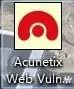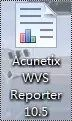
3、之后我们将破解补丁移动到AWVS的安装目录，打开破解补丁。点击patch之后便可以完成破解，最后关闭破解补丁。
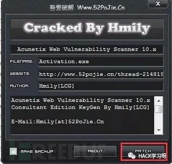
4、破解之后，程序将弹出下面程序，直接点击next下一步
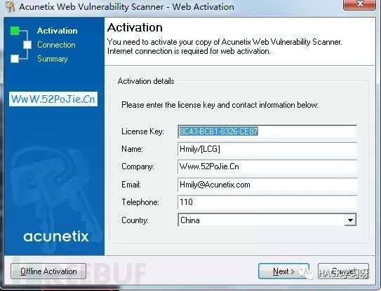
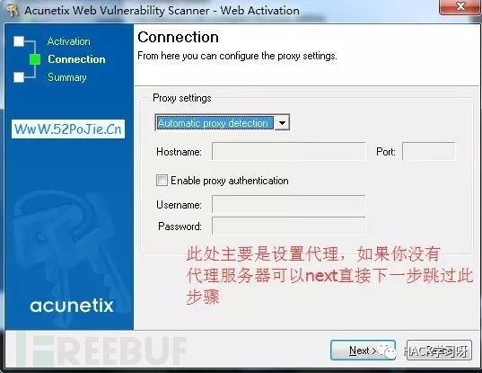
5、最后提示激活成功之后，直接Flish完成安装，提示Successfuly表示成功安装。
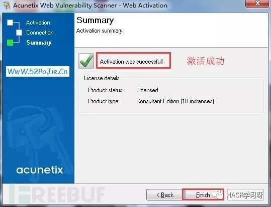
6、启动桌面上的Acunetix Web Vulnerability Scanner 10.5，在菜单栏上选择——Help——About可以看到AWVS的版本，以及包括“Program Updates”可检查软件更新，我们这里就不更新。毕竟我们下的是最新版的。
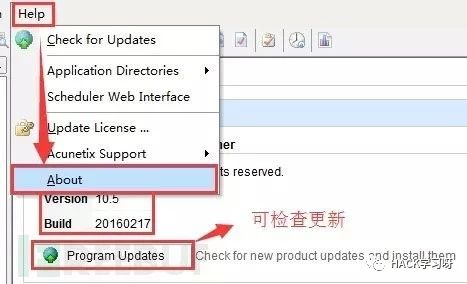
7、主要程序介绍：在程序安装路径“C:\Program Files (x86)\Acunetix\Web Vulnerability Scanner 10” 中主要文件的作用如下：
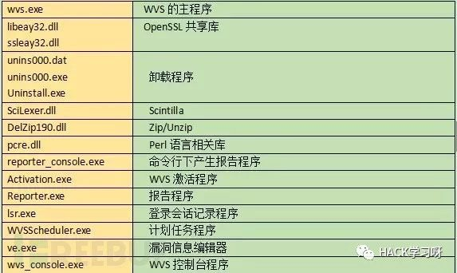
8、安装界面介绍：启动AWVS可以看到整个程序的界面
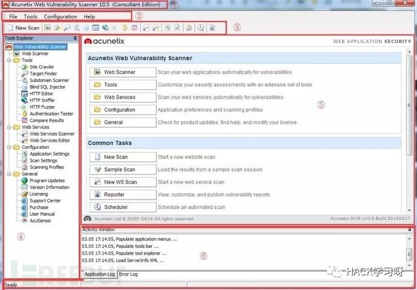
①、标题栏
②、菜单栏
③、工具栏
④、主要操作区域
⑤、主界面
⑥、状态区域
9：主要操作区域简介：
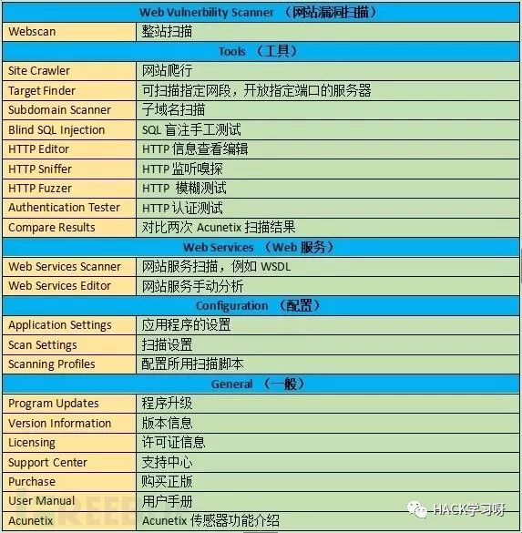
0×02、AWVS的菜单栏、工具栏简介（AWVS menus bar & tools bar）
a)、菜单栏
File——New——Web Site Scan ：新建一次网站扫描
File——New——Web Site Crawl：新建一次网站爬行
File——New——Web Services Scan：新建一个WSDL扫描
Load Scan Results：加载一个扫描结果
Sava Scan Results：保存一个扫描结果
Exit：退出程序
Tools：参考主要操作区域的tools
Configuration——Application Settings：程序设置
Configuration——Scan Settings：扫描设置
Configuration——Scanning Profiles：侧重扫描的设置
Help——Check for Updates：检查更新
Help——Application Directories——Data Directory：数据目录
Help——Application Directories——User Directory：用户目录
Help——Application Directories——Scheduler Sava Directory：计划任务保存目录
Help——Schedule Wen Interface：打开WEB形式计划任务扫描处
Help——Update License：更新AWVS的许可信息
Help——Acunetix Support——User Mannul(html)：用户HTML版手册
Help——Acunetix Support——User Mannul(PDF)：用户PDF版手册
Help——Acunetix Support——Acunetix home page：AWVS官网
Help——Acunetix Support——HTTP Status：HTTP状态码简介
b)、工具栏
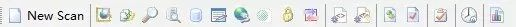
从左到右分别是（这些都可以在主要操作区域找到，所以不常用）：
新建扫描——网站扫描——网站爬行——目标查找——目标探测——子域名扫描——SQL盲注——HTTP编辑——HTTP嗅探——HTTP Fuzzer——认证测试——结果对比——WSDL扫描——WSDL编辑测试——程序设置——扫描设置——侧重扫描设置——计划任务——报告
0×03：一次新的扫描的功能全面概述（Scan Settings：扫描类型、扫描参数）
1、点击菜单栏的 New Scan 新建一次扫描， 网站扫描开始前，需要设定下面选项:
1). Scan type
2). Options
3). Target
4). Login
5). Finsh
1、Scan type：
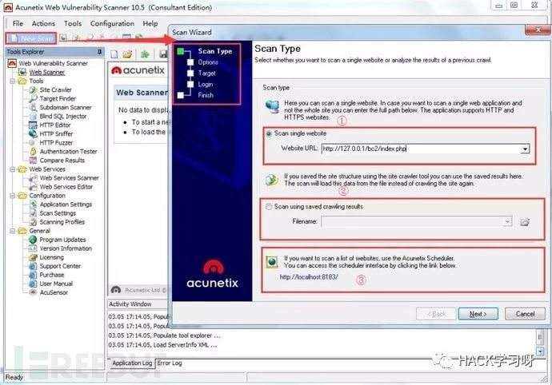
①：Scan single website：在Website URL处填入需要扫描的网站网址，如果你想要扫描一个单独的应用程序，而不是整个网站，可以在填写网址的地方写入完整路径。wvs支持HTTP/HTTPS网站扫描。
②：Scan using saved crawling results：导入WVS内置 site crawler的爬行到的结果，然后对爬行的结果进行漏洞扫描。
③：Access the scheduler interface：如果被扫描的网站构成了一个列表形式(也就是要扫描多个网站的时候)，那么可以使用Acunetix的Scheduler功能完成任务，访问 http://localhost:8183，扫描后的文件存放在“C:\Users\Public\Documents\Acunetix WVS 10\Saves”.
Acunetix的计划任务，主要特性如下:
a). 可用于大量扫描，扫描结果保存在“C:\Users\Public\Documents\Acunetix WVS 10\Saves”。
b). 扫描结束，可以使用邮件通知。
c). 可设定计划时间，什么时候允许扫描，什么时候不允许扫描
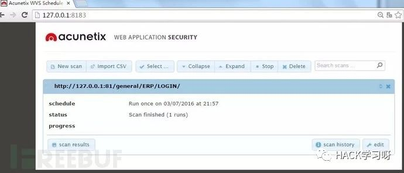
2、Options：
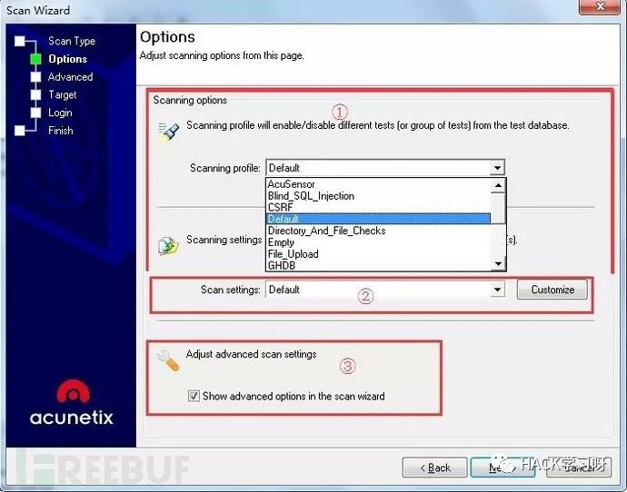
Scanning options ：侧重扫描的漏洞类型设置
①：Scanning profile：设置侧重扫描的类型，包含16种侧重检测类型，如下：
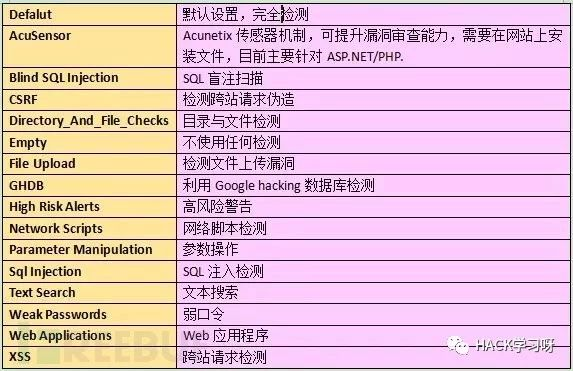
每种侧重扫描的类型又有包含多种扫描script，如果需要做调整或者修改，请查看 Configuration >> Scanning Profiles
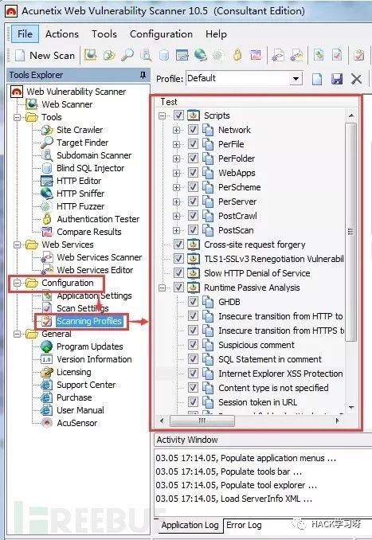
Scanning Profiles中的每个侧重扫描的类型下都包含了非常多的扫描脚本，由于太多我就不一一介绍，随便点击一个，右边就有对该扫描脚本的介绍，随意抽选几个介绍，例如：
ftp_anonymous.script：扫描ftp匿名登录漏洞 PHPInfo.script：扫描是否有phpinfo泄露
Backup_File.script：扫描网站的备份文件 wordpress_8.script：针对 wordpress弱口令测试
你也可以选择扫描的脚本，然后新建自己的扫描策略，如下：
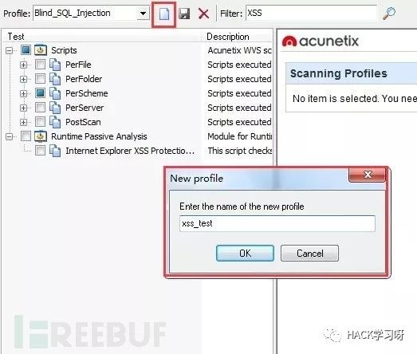
选择自己需要的策略，可以单击保存按钮保存一份策略，单击X按钮删除一个策略
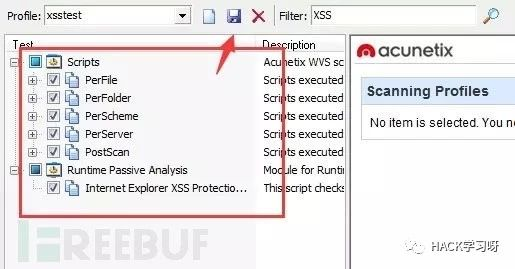
Scan Setting：扫描配置
②：可定制扫描器扫描选项,AWVS在默认情况下只有“default”默认扫描参数配置策略，点击旁边的Customize则可以自定义:
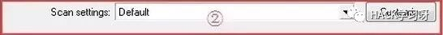
与界面主操作区域对应：如下
（注意要点：如果在新建向导中设置Scan setting只会影响本次扫描的扫描参数设置，如果在主界面中的Scan Setting设置则是全局配置）
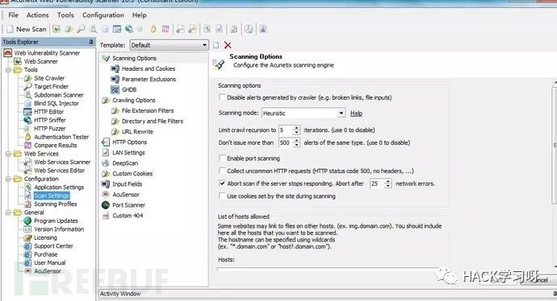
此处可以设置各种扫描参数配置，包括点击白色处“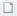”是新建配置，单击X则是删除配置。
a)、Scan options 扫描配置
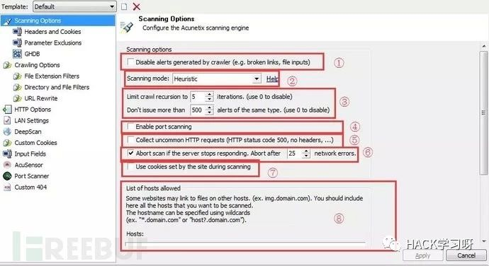
①：禁用蜘蛛爬行出发现的问题，AWVS在漏洞测试之前会使用蜘蛛功能对网站先进行测试，此处是禁用蜘蛛爬行发现的问题，如:错误的链接。一般这样的错误都是风险很低的警告信息。
②：scanning mode 是指扫描的模式分为三种如下：
Heuristic：标准的扫描模式，扫描线程和深度一致
Quick：快速扫描模式
Extensive：扩展性扫描，完整扫描模式
它们三种模式的扫描线程、深度如下：
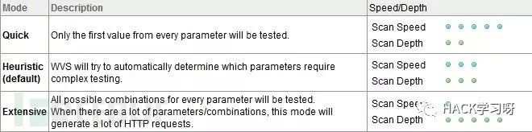
③：目录爬行的递归深度，默认为5级，使用0则关闭
不要发出超过500个相同类型的警告，使用0则关闭
④：开启目标端口扫描功能，但该扫描速度较慢，建议使用NMAP端口扫描
⑤：收集不常见的HTTP请求状态，例如HTTP 500状态码
⑥：在扫描过程中如果服务器停止响应尝试25次之后中止扫描
⑦：在扫描过程中，是否使用网站设定的cookie
⑧：网站中链接到其它主机的文件，而这些网站与主站的关系相近，例如：www.baidu.com 链接中包含test.baidu.com，你可以在这里添加允许与主站关系很大的域名来进行扫描，可以使用通配符形式。这样扫描的时候将扫描这些主机的漏洞。
b)、Headers and Cookies 头部与Cookie
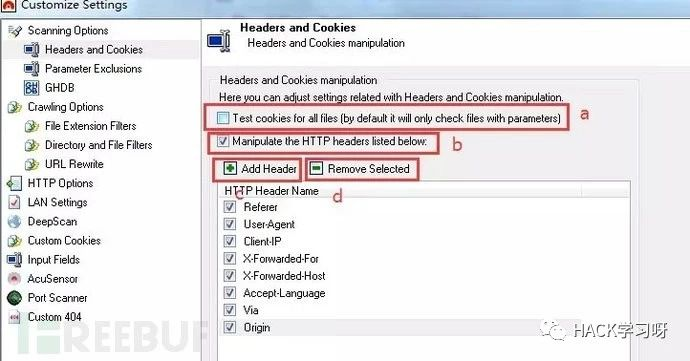
（a)、Test cookies for all files (by default it will only check files with parameters)
访问所有文件，都使用cookie测试(默认情况下，只有带参数的文件才使用cookie进行检测)。
（b)、Manipulate the HTTP headers listed below
操控HTTP头部信息，可按照自己的要求定制HTTP头。
（c)、Add Header
添加一个HTTP头部，在新增的“enter header name here”单击此处可以输入你的头部名称。
（d)、Remove Selected
移除你选中的HTTP头部
c)、Parameter Exclusion 扫描参数排除
有些参数不影响用户会话的操作，你可以排除这些参数被放在这个名单中，扫描器将不会去扫描测试这些参数，注意：名称应该为正则表达式

（a)、添加一个参数排除：
包含URL（*代表任何URL）、名字(要过滤的参数，一般以正则表达式表示)、type（请求方式，包含Any任何类型、GET、POST类型、COOKIE类型）
（b)、移除选中的排除
d)、GHDB 利用Google hacking数据库检测
Google hacking数据库设置，包含了1467条数据在数据库中
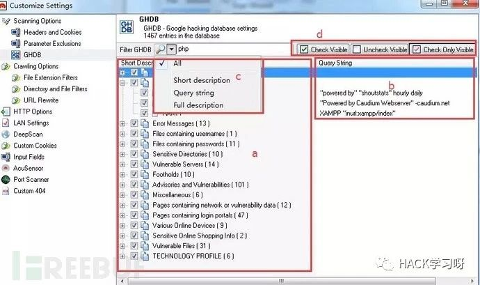
AWVS在扫描的过程中利用google hacking技术在google搜索引擎上对目标网站进行信息搜集。下面的语法是对网站的信息搜索的google语法。
（a）、Short description: 简要描述信息：(参考：http://baike.baidu.com/view/336231.htm )
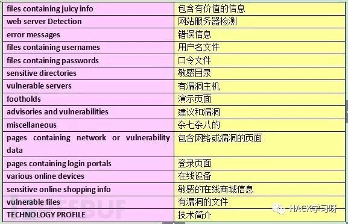
(b)、Query String :Google上查询的字符
(c)、 Filter GHDB：GHDB过滤搜索 （Short description:简要描述 Query String 查询字符串 Full description:所有描述）
(d)、check visible：检测明显的 unchek visible：不检测明显的 check only visible：检测仅明显的
③： Crawling options 爬行设置：
针对特定的扫描场景，自定义爬虫的行为，这些选项将定义爬虫的行为：
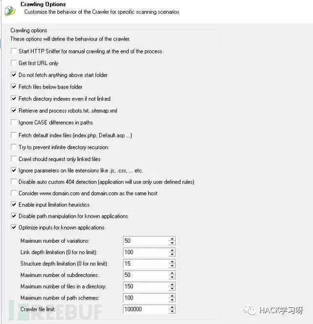
start HTTP Sniffer for manual crawling at the end of process：蜘蛛爬行过程结束后启动HTTP嗅探，以发行更多链接。
Get first URL only：只扫描首页,不抓取任何链接。
Do not fetch anyting above start folder：不扫描上级目录，例如：新建扫描为http://www.baidu.com/cms/，将不会扫描cms上级目录的链接。
Fetch files below base folder：扫描子目录。
Fetch directory indexes even if not linked：获取目录索引，即使没有关联性的。
Retrieve and process robots.txt, sitemap.xml. ：抓取并分析robots.txt、sitemap.xml中出现的目录、URL。
lgnore CASE differences in paths：忽略目录的大小写敏感
fetch default index files (index.php,default.asp):尝试获取每个目录下的默认索引文件，例如扫描http://qq.com，如果爬行到test目录则尝试获取test目录下是否有索引文件，例如:http://qq.c/test/index.php 。
try to prevent infinite derectory recursion：防止抓取到死循环的无限目录。如：http://qq.com/admin/admin/admin/admin/admin
crawl should request only linked files: 爬行应请求只有关联性的文件。
ignore parameters on file extensions like .js .css…etc：忽略文件扩展名类似为js css的参数。
disable auto custom 404 detection(application will use only user defined reles):禁用自动定制404检测（应用程序将使用用户定义的规则）。
consider www.domain.com and domain.com as the same host：如果启用该项那么AWVS会认为www域名和顶级域名是同一主机。
enable input limitaion heuristics:如果启用该选项，并在同一目录下的文件被检测20多个相同的输入方案，抓取工具只会抓取前20个相同的输入方案。
optimize inputs for known applications: 对已知应用程序输入的优化。
maximum num ber of variations：变化的最大数目,例如：http://www.baidu.com/index.php?id=1，这里设置ID的最大值为50。link depth limitation：链接深度限制，例如从A站点抓取发现了一个链接，又从该链接上发现另一个链接，以此类推最大深度默认为100。
structure depth limitation：子目录的最大深度的限制，默认最大15级目录。
maximun number of files in a derectory：在一个目录下AWVS爬取文件数量的最大值。
maximum number of path schemes：判断路径任务的最大任务数。
crawler file limit：爬虫爬行文件的数量限制。
④：file extension filters： 文件扩展名过滤
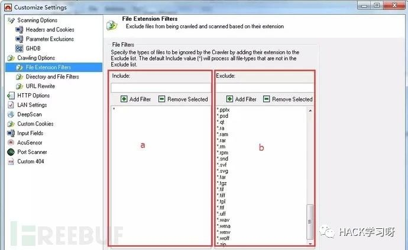
AWVS将读取该配置，尝试扫描哪些后缀的文件，例如排除掉的后缀文件，AWVS在工作的时候将不扫描被排除的后缀文件，因为扫描它们毫无意义。
a)、包含的扩展名，AWVS将会扫描的后缀扩展文件
b)、 排除的扩展名，AWVS将不扫描的后缀扩展文件
⑤： Directory and file filters：目录和文件过滤
定义一个目录列表被排除在爬行和扫描过程通配符允许您筛选一系列文件：如/dir1/* 或者/dir1/a *。表示将不扫描/dir1/下的文件，/dir1/a*表示的是不扫描dir1下以a开头的文件的漏洞。
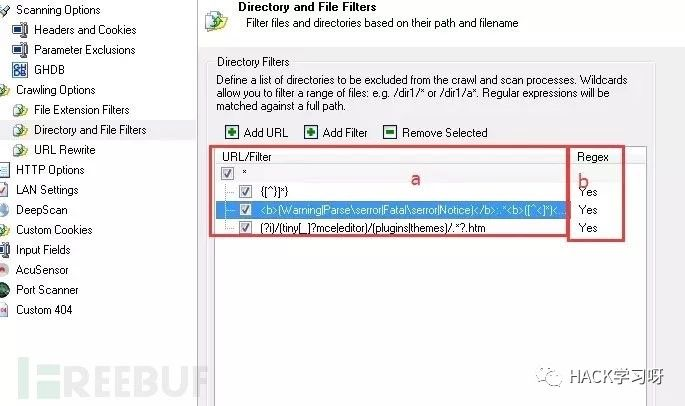
a)、过滤的URL
b)、是否为正则表达式
⑥：URL Rewrite：URL重定向设置
一些网站使用URL重写，这里你可以定义一个列表的URL重定向不同网站帮助爬虫浏览这些网站。
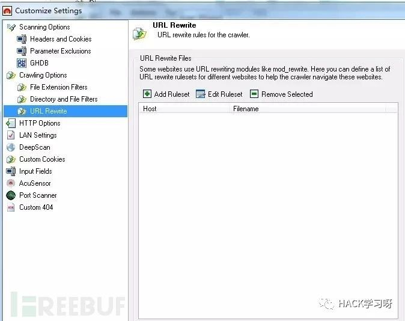
⑦：HTTP Options
定义在爬行和扫描过程的HTTP头选项
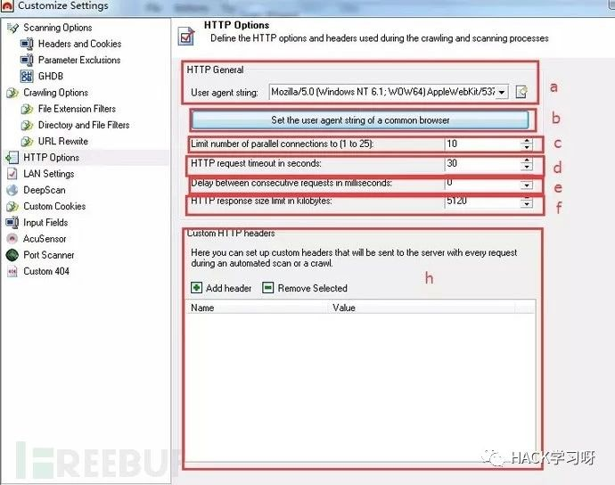
(a)、用户当前的agent
(b)、定义不同浏览器的agent
(c)、检查最大的并发连接数
(d)、HTTP的请求超时时间
(e)、AWVS对两个请求之间延迟的毫秒，某些WAF对访问请求时间太快会进行拦截
(f)、HTTP请求的文件字节大小限制，默认5120kb
(h)、自定义HTTP 头部，例如自定义IP报头或者其它的HTTP头，如下：
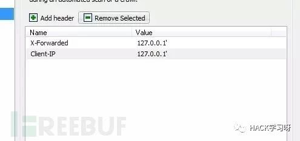
⑧：Lan Settings
配置代理服务器来扫描网站漏洞
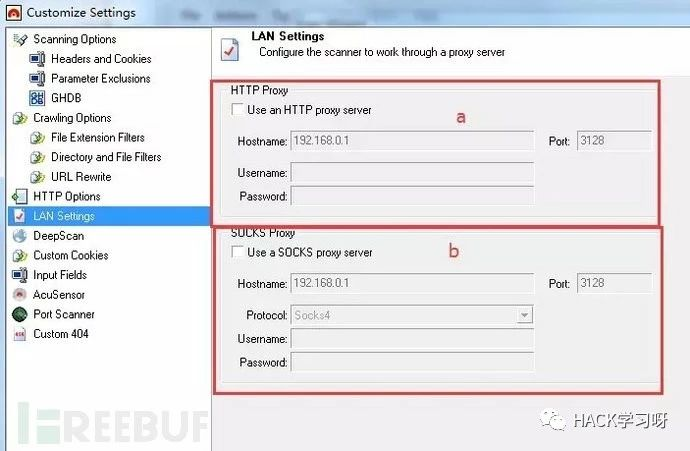
a)、http代理服务器
b)、Socks代理服务器
⑨：DeepScan
深度扫描,深度扫描技术，嵌入WebKit提供使用JavaScript基础技术如AJAX / HTML5和SPA 网站全面支持
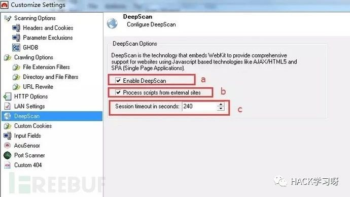
a)、启用深度扫描
b)、扫描从外部引入的脚本中存在的漏洞，例如scr=http://www.qq.com/xx.jsp
c)、Session 超时的秒数
⑩：Custom Cookie
自定义Cookie，例如你在网站的登录之后获取Cookie，将Cookie添加到这来就可以实现预登陆状态下的扫描
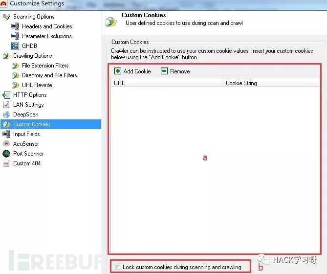
a)、添加、移除自定义的cookie ，包含要添加的URL，使用*表示所有的URL，以及对应的Cookie值。
b)、扫描时锁定自定义的cookie
⑾：Input Fileds
此处主要设置提交表单时的字段对应的默认值，例如在HTML表单提交中出现age的字段，则会自动填写值为20。字段中：*web*中的是含有通配符的表示形式，例如1web2这样的就是满足*web*，而字段的值则有多种变量如下：
${alpharand}：a-z的随机字符串
${numrand}：0-9随机数字
${alphanumrand}：上两个的组合(随机字符串+随机数字)
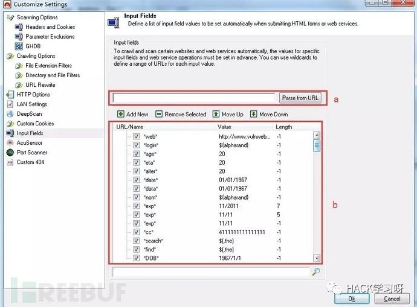
(a)、从URL中 解析表单的字段，例如输入http://login.taobao.com 将从这里读取表单的字段，值如果有默认则填写默认，没有则需要自己添加，例如对wooyun.org自动提取表单的字段，预设值则需要自己设置，这样方便在扫描的时候AWVS自动填写预设的值去提交表单进行漏洞测试
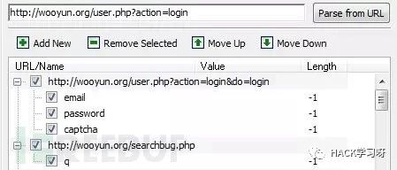
(b)、添加、移除、前后顺序设置自定义的表单字段，包含：名字、值、长度
⑿ ： AcuSensor
传感器技术 ，从这个节点，您可以启用或禁用acusensor和它的功能和设置密码。
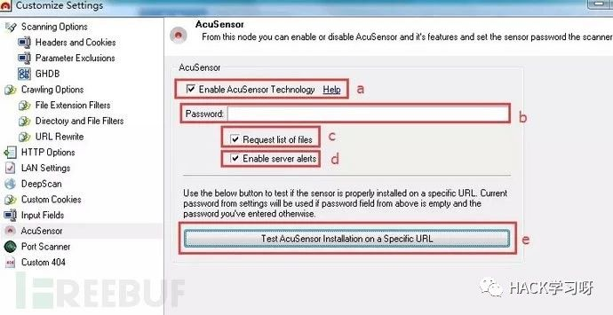
(a)、启动AcuSensor技术
(b)、为AcuSensor设置密码
(c)、请求文件列表
(d)、开启服务器警告
(e)、在一个特定的URL上测试AcuSensor
⒀：Port Scanner
配置端口扫描程序的、socket、超时和端口设置
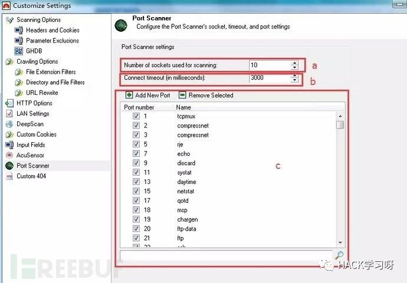
(a)、用户扫描端口的线程数
(b)、连接超时的毫秒时间设置
(c)、添加、移除扫描的端口，这里已经列举了常用的端口，AWVS将会扫描这里的端口。
⒂：Custom 404
自定义404页面，为了扫描中防止误报，应当自定义404页面
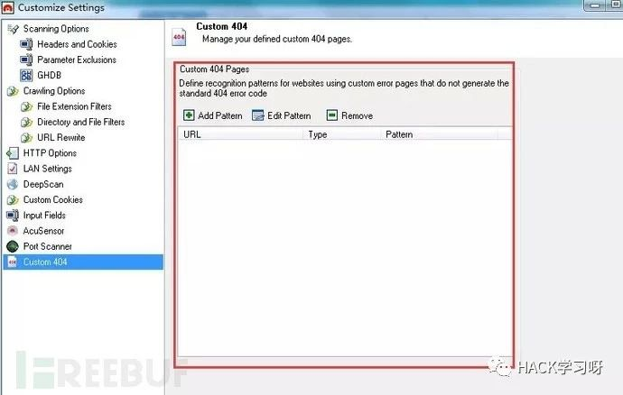
自定404页面的方式：
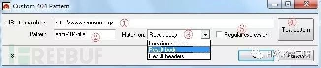
①：自定义404的URL
②：404页面的关键字匹配
③：匹配的关键字出现的位置
Location header：出现在HTTP头部
Result body：出现在HTTP的正文处
Result headers：出现在HTTP的头部+正文处
④：测试404页面是否存在Pattern中输入的，如果成功表示404页面中存在该关键字
⑤：是否为正则表达式
当然你可以单击向下展开的按钮，可以测试网站的404页面包括头部、浏览形式的查看，然后你可以选择404的关键字，通过点击“Generate pattern from selection”来生成404的关键字或者表达式，并且会自动设置出现的位置。
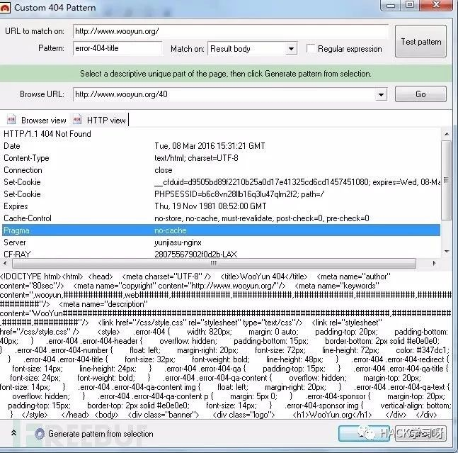
Adjust advanced scan setting:
在扫描向导中显示高级扫描设置，如下面的Advanced就是高级选项
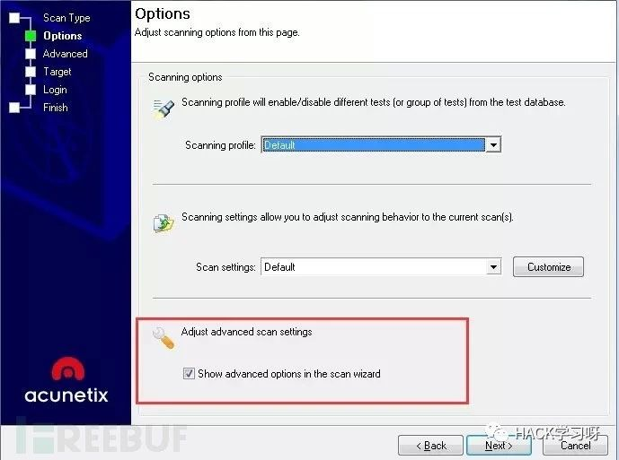
Advanced：
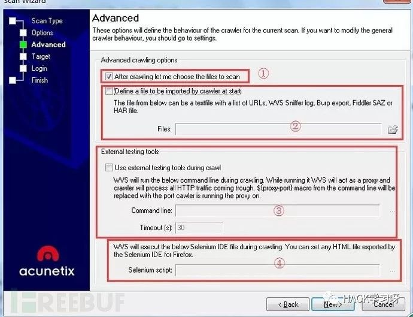
进入高级之后分别是：
①：在爬行结果之后选择我们需要扫描哪些文件
②：自定义从哪里开始扫描，导入txt文件，例如扫描http://www.baidu.com，不想从根路径开始扫，而从二级目录http://www.baidu.com/test/，将其保存到txt文件中之后将从test二级目录开始扫描
③：爬行的时候使用外部测试工具，蜘蛛爬行的过程中将运行您设置的命令，以及超时时间设置
④：设置包含一个火狐扩展插件Selenium IDE生成的HTML文件，蜘蛛爬行的过程中将会根据它来进行爬行。
Target：
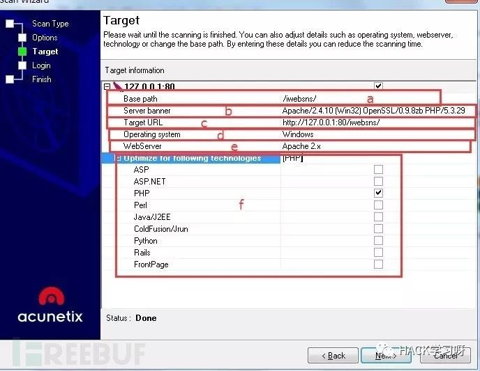
(a)、扫描目标的根路径
(b)、服务的banner
(c)、目标URL
(d)、目标操作系统
(e)、目标的Web容器
(f)、目标的程序语言
Login：
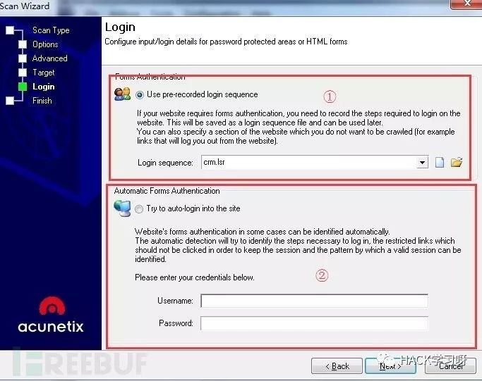
①：使用预先设置的登录序列，可以直接加载lsr文件，也可以点击白色处开始按照步骤新建一个登录序列(具体步骤参考后面的演示)
②：填写用户名密码，尝试自动登录.在某些情况下，可以自动识别网站的验证。
Finish：
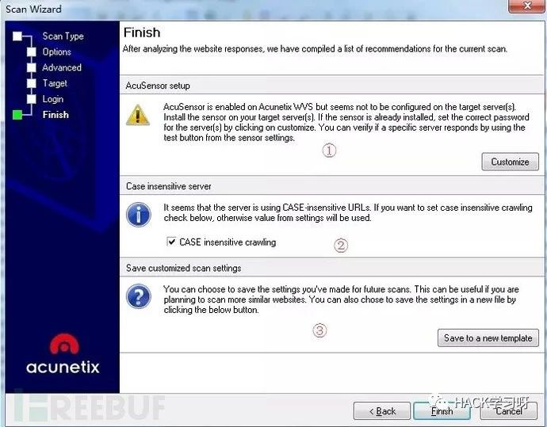
①：使用AcuSensor传感技术的设置
②：爬行与扫描中是否区分大小写
③：将这次的设置保存为一个策略，以便下次直接使用策略
开始扫描：

①：
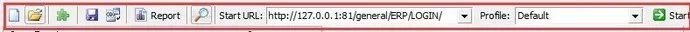
依次为：
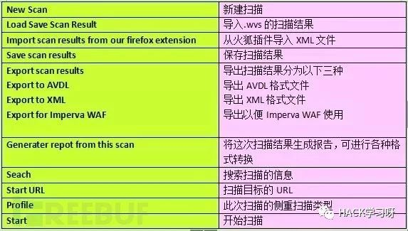
#1、Generater report from this scan ：
使用Configuration Settings可定制报告的某些信息，例如logo等.
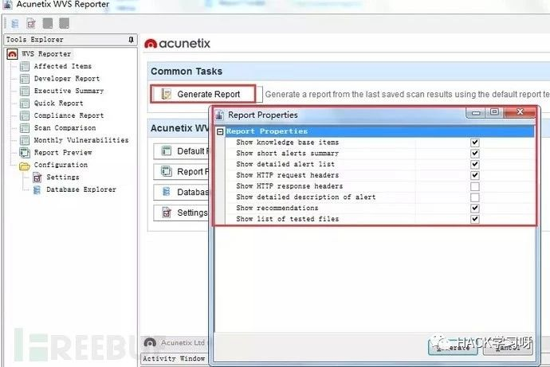
转换为不同的格式报告：
②：扫描结果显示，包含存在漏洞的名字、链接、参数等，Site Structrus是网站爬行出的结构状态、Cookie是爬行的Cookie信息。
③：详情信息显示，需要点击左边的扫描结果才会展示详情信息。如下图就是左侧显示的SQL注入和参数，右边是SQL注入的详情。
如果不点击则是扫描的高低危漏洞统计，如下图就是威胁等级：Level 3，漏洞总结果是17个，High（红色）：高危漏洞2个，Medium(橙色)：中危漏洞8个，Low(蓝色)：低危漏洞5个，Informational（绿色）：提示信息2个。
④ ：显示三个信息。
Taget Information：包含目标站点 1、是否应答、2、WebServer的banner、3、操作系统、4、Web容器、5、程序语言
Statistics：对扫描的各种信息统计，包含1、扫描的总时间、2、HTTP请求数量、3、平均扫描时间、4、扫描重复次数
Progress：扫描进度信息的提示，包含1、是否扫描完成，100.00%表示已完成，2、端口扫描是否完成 3、蜘蛛爬行是否完成（文件数量、目录数量、变量数量）、4、脚本信息 5、内部模块
⑤ 显示应用程序运行、测试的日志、错误日志。
0×04、AWVS的应用程序配置详解
三个设置点：
1、Application Settings：
1、Application Updates： 程序升级的配置
Application Updates:程序升级
①：程序更新，分为两种：
At application startup：在程序启动时自动检查更新
When ‘check for updates’ is clicked：用户点击“General——Program Updates——Check for updates”时更新
②： 更新时使用代理服务器来更新程序，需填写主机名、代理端口、用户名和密码
2、Logging： 日志配置
①：Enable logging：开启日志功能
②：Log infomational messages：将程序的提示信息记入日志
③：Log warning messages：将程序的警告信息记入日志
④：Log Errir messages：将程序的错误信息记入日志
⑤：Log HTTP request and response to a file：将程序中发起的HTTP请求和响应信息记录到一个文件中log\httplog.txt
⑥：Log only HTTP error in HTTP log：只记录HTTP的错误信息在HTTP的日志中
⑦：Include timestamps：在记录日志的时候包含产生每条记录的时间戳
⑧：On error switch to Error Log tab：在发生错误信息的时候，自动切换到Error Log面板

⑨：number log files to keep before deleting：删除日志前需要保留的日志数量，默认2个
3、Saved Scan Results 扫描保存数据库的设置
①：保存报告的数据库类型：分为： MS Access 和 MS SQLSERVER两种，如果使用SQLserver将要填写SQLServer的数据库地址、用户名、密码包括数据库名等。
②：Access数据库的保存位置，默认是：C:\ProgramData\Acunetix WVS 10\Data\Database\vulnscanresults.mdb
③：如果你使用SQLServer数据库，不想填写数据库IP\用户名\密码\数据库名等信息，你可以直接导入.dbconfig格式的数据库配置
④：扫描完成之后自动保存结果。
4 、HTTP Authentication HTTP基本验证
此验证主要用于如下类似的HTTP基本认证：
①：AWVS在扫描过程中可识别基本验证，在此过程中不要询问我们是否需要验证，选中此项AWVS将不会提示我们哪些页面需要认证。
②：自动保存凭证信息，在AWVS扫描过程中询问我们HTTP认证的账号密码，勾选此项之后，当我们输入用户名密码之后，AWVS将自动保存我们的输入，以便以后扫描时不再需要输入。
③：配置需要验证的 Host主机、路径Path、Username用户名和Password密码。
按钮中：
Add Credentials：添加一个凭证
Remove Selected：删除选择的凭证
Edit：编辑选中的凭证
Show Password：显示已添加的凭证的密码
5、Client Certificates： 证书验证
①：Certificate file：选择证书文件 Password：证书密码 URL：验证证书的URL地址
②：Import Certificate：上方填写完整之后点击此按钮导入证书 Remove selected：移除选中的证书
6、Login Sequence Manager：表单验证 【重点】
表单验证用户某些页面，例如扫描后台、扫描用户登录后可访问的页面时候，需要登录用户密码验证再进行扫描
与新建扫描向导中的“Login”功能一致,需要新建一个表单验证。
①：New sequence ：新建一个表单验证 Edit sequence：编辑一个表单验证 Remove sequence：移除选中的验证
Browser：浏览表单验证文件，后缀为.lsr。
如何新建一个表单验证，过程三个步骤如下，以DVWA渗透测试演练系统来演示：
#1、Record Login Actions 记录登录操作，这一步是选择需要登录的页面之后，输入账号密码进行登录，然后程序将会记录登录的所有操作、包括输入的账号密码以及登陆后跳转的页面
①：此处标记的是你扫描的URL
②：此处当然你登录的表单区域了
③：三个按钮 Record ：开始记录登录的操作 Stop：停止记录登录操作 Play：回放你录制的登录操作来确定是否正确
⑤：这里记录的是你的几个动作，如上图只有三个动作：
1、导航到http://127.0.0.1/dvwa/login.php
2、对表单的username字段输入admin账号
3、对表单的password字段输入password密码
4、虽然上图没有第四步，但是第四步是：Clik on Login，就是我们点击登录的这个步骤
④： ↓ ↑：上下键来调整登录的步骤 ，+ 、- ：增加或删除一个登录步骤
⑥：显示登录每个步骤的类型、目标、超时时间、填入的值
第一步记录登录操作已经成功完成，点击Next进入下一步
#2、Record Restrictions：记录限制请求，此处的记录的原因是如果AWVS在扫描登录状态的页面的时候，如果请求到类似Logout的退出请求，那么就会结束会话并退出登录，这样下来我们就无法继续扫描后台的漏洞了，所以此时我们需要记录一个限制的地址，也就是告诉AWVS，哪个请求是会退出会话，当然不仅仅是退出，如果一个后台有“注销”、“退出”、“重新登录”三个按钮，我们也要同时记录着三个请求。
针对DVWA的限制请求记录步骤
①：首先Restrict按钮是要呈现按下的状态，此时就会开始记录用户点击的限制请求
②：DVWA中的左侧导航“Logout”是退出的链接，我们点击它之后中间会弹出一个拦截
③：拦截中的数据就是我们点击“Logout”的请求，这里有三个按钮
Restrict request using exact match ：记录下此请求标识为精确的限制约束，也就是说将它告诉AWVS不要请求该链接
Forward ：放过这个请求，不标记它为限制请求
Forward all：停止抓取所有请求，释放所有的请求
所以这里我们选择：第一个按钮，标记 http://127.0.0.1/dvwa/logout.php ;为限制请求，不让AWVS去请求它。
如上图：停止抓取请求，点击“Restrict”使这个按钮呈未按下状态，然后可以看到右上角出现的限制约束的请求链接，OK，Next进入下一步了。看到successfully，我想你已经知道这步是成功确定了一种检测有效会话的模式。
#3、检测会话是否有效：完成第二部步骤之后进入第三步骤是检测我们的会话是否有效，如果有效就完成了一次表单登录验证的流程。
②：Detect while navigating：导航检测，选中进入进入下一步
①：随意点击一个需要登录链接，如果弹出Successfully则说明我们去点击这个链接的会话是正确的，
③：历史检测：获取历史检测的正确性
⑤：这里会自动获取登录状态之后的关键字或状态码，并以一种方式判断，这里分别有几种方法：
a)、检测到登录后的的状态码是多少，或者不是多少？
status code is
status code is not
b)、检测登录后的关键字是在头部、还是不在头部？
Pattern is found in headers
Pattern is not found in headers
c)、检测登录后的关键字是否在返回的响应中？
Pattern is found in response
Pattern is not found in response
④：Check Pattern：测试AWVS提取的关键字是否正确，如果是successfully则表示正确
⑥：完成登录表单验证的步骤之后保存会话文件，后缀为.lsr
最后AWVS可以正常扫描登录状态后的页面的漏洞了：
7、False Positives 处理误报
此处是存储误报的链接、请求的。在我们扫描的结果中，如果你认为这一项是AWVS的误报，右击选择它”Mark alert(s) as false positive“将它放置到误报区域内，AWVS下次扫该站点的时候将不会再认为它是一个漏洞。Removed Selected则是移除选中的误报。
8、HTTP Sniffer 代理型嗅探抓包设置
Acunetix HTTP 代理设置，默认监听8080端口(此功能默认不开启)
①：监听的接口分为两种：
local interface (recommended)：接受本机的代理请求（推荐）
all interface (not recommended) 接受所有的代理请求（不推荐）
②：监听的端口，默认是8080
此配置设置之后点击“Apply”应用之后，在主操作区域的Tools中选择HTTP Sniffer，将本地浏览器设置代理为127.0.0.1:8080，再点击“Start”就可以获取嗅探到访问网页的数据包了
9、Scheduler：计划任务性扫描
用户可以不启动AWVS来扫描漏洞，可以直接访问Web版实现计划任务，可以扫描多个网站漏洞，使用该项服时要保证Acunetix WVS Scheduler v10服务已经启动。
Web Interface：Web版扫描的配置
Listen open port：Web界面计划任务的端口，访问：http://localthost:8183
Allow remote computers to connect：允许远程计算机访问我们的Web版的计划扫描页面，如果一旦开启则强制使用HTTPS协议另外还需要设置账户密码来进行验证，为了保证它的安全性。
Use HTTPS：使用HTTSP协议加密传输的数据
Require authentication：使用用户名、密码形式验证，一般配合“Allow remote computers to connect”来使用。
Change administrative password：修改认证的用户名密码
Scan：设置计划任务扫描的线程与保存结果
Scan results save folder：Web任务计划扫描结果的保存位置
Parallel scans (max 10)：同时扫描的网站的数量，最多10，如果你的许可证书是正版，最大数量可达到500个
Email Notifications：配置邮件服务器将扫描工作通过邮件形式发送给您
Send email notifications when scans are fnished：选择是否扫描工作的时候发送邮件通知我们，如果勾选则启用该功能
Server ip/hostname：邮件系统的主机IP
Port：邮件系统的端口
The SMTP server requires authentication：勾选它SMTP服务器是否需要密码认证
Username：SMTP用户名
Password：认证密码
TT：邮件发送的目标，邮件将发送给谁。
CC：邮件将抄送给谁
From：发送的人的设置，就是说邮件是从哪个邮箱发送的
Check here to verify Settings：测试邮箱是否正确配置，是否能成功发送
Excluded hours Templates：禁止扫描时间设置模版
在长时间扫描的时候，假如你不想在流量高峰期扫描你的网站，你可以指定一个暂停扫描的时间范围。例如上图：红色区域表示不允许扫描的时间，蓝色区域表示扫描的时间，这里表示周六、周日早上4:00-4:59之间的时候不进行扫描。
10、Miscellaneous 杂七杂八项配置

Memory Optimization：内存优化
Use temporary files to reduce memory usage：使用临时文件，扫描中产生的临时文件存储在硬盘中，而不存储在内存中，以减少内存的使用情况。
Tamporary folder：临时文件的位置
Keep all AcuSensor data in memory fo inspection：保持所有的AcuSensor数据在内存中检测
Maximum memory during crawling：爬行过程中可占用的最大内存（单位：M），如果在爬行和扫描过程中内存不足，则自动停止扫描
Display Options：显示选项
Display custom HTTP status information：显示自定义HTTP状态信息
Display HTTPS status icon：显示HTTPS的状态图标，启用此选项的话，扫描的时候，如果发现https访问的区域，将会在爬行结果中显示出一个锁状的小图标
Password Protection：密码保护
Current password：当前密码
New password：新密码
Confirm new password：确认新密码
Set password：设置密码
设置密码的方式是，当前如果为空密码，直接在第二三个文本框输入密码，点击Set password就可以完成密码设置， 配置密码后，运行wvs主程序及主要程序时需要输入口令验证 。
如果需要清除设置的密码，只要输入当前密码，新密码处留空再点击设置密码即可。
0×05：AWVS的蜘蛛爬行功能：
作用：爬行网站所有URL，可了解网站基本目录结构，以便于进行下一步的扫描
①：Tools–Site Crawler 选择网站爬行功能
②：从左到右的功能分别为：
 ：打开格式为.cwl的蜘蛛爬行的结果
：打开格式为.cwl的蜘蛛爬行的结果
：保存格式为.cwl的蜘蛛爬行结果
：导出 export.xml蜘蛛爬行报告
： 从导入的文件建立结构
：扫描这个网站的漏洞
：选择一个文件进行扫描
：扫描的网站URL
③：被爬行网站的登录验证文件，加载这个文件可以爬行到需要登录的页面资源。Strart：开始爬行 Stop：停止爬行
④：被爬行网站的的爬行结果：
Name：爬行网站的的文件名称、Cookiie信息
HTTP Result：文件访问的状态，OK表示200，Forbidden表示403，Internal Server Error表示500
Inputs：可输入的参数值
Title：文件的标题
Content Type：文件的类型
⑤：详细信息显示区域，点击左边的任意文件，在这里可以显示它的详细信息。下方的选项卡分别为：
Info：文件详细信息
Referres：来源页信息
HTTP Header：HTTP头部信息
Inputs：可输入参数的信息
View Source：查看文件源代码
View Page：以浏览方式查看页面
Structure Analysis：结构分析
0×06：AWVS的目标探测工具（Target Finder）
相当于一款加强版（针对WEB渗透测试）的端口、banner探测工具
功能：
1、探测指定IP/IP段开放特定端口的IP
2、探测出IP后，探测该端口的banner信息，可探测出该端口上运行的WEB服务的中间件的版本信息
①：Tools——Target Finder打开该工具
②：被扫描的IP/IP段，IP段格式为：192.168.199.1-255,
③：被扫描的端口，这里是80,443端口
④：扫描出的结果包含： Server:目标主机 Hostname：主机名 Bnaner：Bnaner信息 Web Server：Web容器
⑤：将扫描的结果进行操作分别如下操作：
Scan this Server：用AWVS扫描这台主机的漏洞
Edit with HTTP Editor：用HTTP Editor测试目标
Save list of targets (for scanning)：保存为.txr格式的目标列表作为后期的扫描目标
Export list of servers to CSV：导出为CSV格式的列表，包含所有的描述信息
⑥：查看目标主机的Response Headers（响应的HTTP头信息）、Response Data（响应的数据）、View Page（浏览形式查看）
0×07：AWVS的子域名探测工具（Subdomain Scanner）
作用：探测并猜解子域名的信息，
①： Tools——Subdomain Scanner 工具位置
②： 填写需要被扫描子域名的主机域名
③： 使用的DNS服务器，分为两种：
Use DNS Server from target：使用目标的DNS服务器探测解析
Use Specified DNS Server：使用自定义的DNS服务器，在旁边可以填写自定义的DNS服务器
④：Timout：超时时间，单位是秒
⑤：被探测出的子域名列表信息，分别包含Domain：被探测出的子域名； IP Address：子域名对应的IP； Web Server Banner（HTTP）：HTTP的WEB服务器的Banner信息； Web Server Banner（HTTPS）：HTTPS的WEB服务器的Banner信息
⑥：右击任意一个探测出的子域名，可对其如下操作：
Scan this Server：用AWVS扫描这台主机的漏洞
Edit with HTTP Editor：用HTTP Editor测试目标
Save list of targets (for scanning)：保存为.txr格式的目标列表作为后期的扫描目标
Export list of servers to CSV：导出为CSV格式的列表，包含所有的描述信息
⑦：分为HTTP和HTTPS两种，各自均可查看目标主机的Response Headers（响应的HTTP头信息）、Response Data（响应的数据）、View Page（浏览形式查看）
0×08：AWVS的SQL盲注测试工具（Blind SQL Injection）
作用：在扫描网站的时候，发现网站存在SQL盲注漏洞，你可以倒入到SQL盲注工具中，你也可以直接将抓取的SQL盲注HTTP数据包粘贴到SQL盲注工具中进行注入测试。
HTTP Request：
①：Tools——Blind SQL Injection 工具位置
②：SQL盲注的工具栏，分别作用如下：
：开始执行测试SQL注入
：开始读取数据库
：获取表字段信息
：读取数据记录信息
：暂停操作
 ：中止操作
：中止操作
：新建一个SQL注入
：将当前进行注入的信息保存为.bln的文件
：打开.bln格式的文件进行注入分析
：导出xml格式的数据库结构信息
：保存.CVS的数据记录信息
 ：显示或隐藏HTTP Request界面
：显示或隐藏HTTP Request界面
③：Default Value：SQL注入参数原来的值，这里/example1.php?name=root 原来的值是root
：添加一个注入的位置，被添加的地方会显示为：${injecthere}
④：SQL盲注的HTTP信息，可以在扫描网站得到SQL注入的时候，右键“Export to Blind SQL Injection ” ，也可以直接将存在盲注的HTTP请求信息粘贴进来
⑤：搜索区域。
：针对上方的HTTP请求信息进行搜索，包括翻阅上一个下一个按钮
：搜索的结果进行高亮显示
：搜索的关键字为正则表达式
：搜索的关键字匹配大小写
：HTTP信息显示的类型包括：文本、HTML、SQL、XML、CSS等等。。
⑥：此处显示当前的数据库的名字、用户名、版本，以及可列出数据库、表、字段、数据记录 ，如下图右击一个数据库可以获取表、右击表可以获取字段、右击表可以获取数据。Export the structure to file：将数据结构导出为.xml的文件
⑦：此处显示的是注出的所有数据记录，最下方一行显示的是信息状态。
Settings——General：
①：设置数据库的类型，包括三种类型：Autodetect(自动检测)、Mysql(Mysql数据库)、MSSQL(Mssql数据库)
②：数据库注入的方法，包括三种类型：Autodetect(自动检测)、condition based(根据条件情况而定)、Union select base（基于联合查询）
③：Show debug information：显示过程的调试信息
④：对SQL语句中的空格以/**/进行编码
⑤：强制对HTTP传输的SQL字符串进行编码，勾选此项下面两项就是设定编码方式
⑥：对所有的字符进行编码
⑦：对空格使用+进行编码
Settings——Condition Based Extractor：
①：SQL注入字符串的设置
Automatic detection：自动检测
Provided by user：用户自定义选择，条件是${}，例如：1 and {condition}/*
②：真假条件识别器
Automatic detection：自动检测
Provided by Regex：指定正则表达式
Inverse Regex：当你想要真实的情况触发上述正则表达式的条件为假时，启用此选项。
③：特征提取
Bit Method：位测试方法，直接数值转换数字为测试
Half Method：则应用程序将尝试通过使用一半法找出字符的数值，以此递归
Try Parallel request：尝试平行请求
Settings——Union Select based extractor
①：指定联合查询中起始的字段数
②：指定联合查询中最大的字段数
③：指定可见的索引，0是自动检测
Tools：
①：通过load_file函数读取文件内容，需要root权限，点击“Extract”开始读取
File Name：被读取的文件
Offset：指定要从第几个字符开始读取
Length：指定读取多长的字符，0为读取全部
②：执行SQL查询语句，点击“Excute”进行查询。
SQL query：要查询的SQL语句
Offset：指定从第几个字符开始显示结果
Length：指定查询出显示结果的长度，0是全部
③：执行了上面两个操作，如果完成之后将会把结果保存在datebasde目录下，上图就是报错的读取文件和sql查询的结果。
0×09、AWVS的HTTP请求编辑器（HTTP Editor）
作用：包含两种模式，一种Request、一种Text Only模式，主要用于编辑HTTP信息，修改HTTP信息并发送给服务器获取返回的结果，是HTTP信息的重放过程。可修改HTTP的头部数据或者其它信息再提交给服务器处理等。
HTTP Request模式：
①：Tools——HTTP Editor 工具的位置
②：Start：将当前编辑的HTTP请求提交给服务器处理，并获取返回结果。 Encoder Tool是编码工具，界面如下：
支持：URL、HTML、Base64、C-style、MD5、MD4、SHA1、UTF-7等多种编码解码方式
③：从左到右的图标功能分别为：
：针对下方的Requesr Header添加一个新的HTTP头
：删去选择的HTTP头
：编辑Cookie信息，包括增加、删除Cookie某个变量
：使用HTTPS协议
Method：请求的方式，分为GET、HEAD、POST等
Protocol：HTTP的协议分别为1.0、1.1
URL：HTTP的URI部分
Edit Request Variables：修改HTTP信息中GET或者POST的参数、值
④：HTTP请求信息的头部Header
⑤：请求的数据，一般这里存放的是POST数据
⑥：服务器返回的信息，包含HTTP Header(响应的头部信息)、Response Data(响应的信息源码)、View Page：以浏览的方式显示、HTML Structrus Analysis(HTML的结构分析)
Text Only模式：
①：这里不再熬述，讲解SQL盲注功能的时候已经讲解了这一条按钮的作用
②：HTTP的信息，可以自己粘贴进来，也可以对扫描结果进行发送过来，如下：
③：返回响应信息，这里也不多多说，上面已经详细说明了。
0×10、AWVS的HTTP嗅探工具（HTTP Sniffer）
作用：设置代理拦截浏览器的数据包信息，并且可以将数据包发送到HTTP Edit编辑重放或者其它功能，要想抓取数据包应该将浏览器的代理设置为127.0.0.1:8080（默认），在Application Settings——HTTP Sniffer可以修改监听的端口和接收的请求范围。
①：Tools——HTTP Sniffer工具位置
②：Start/Stop：开始或者停止嗅探抓包
Edit Traps： 编辑抓包的规则，例如：拦截ASP、PHP的请求信息、拦截GET请求、拦截POST请求、拦截返回的信息、不拦截images、css、script、显示PHP报错信息、替换user-agent等等….
Enable Traps/Disabled Traps：开启或者关闭规则，如果规则开启，规则中假如设置了例如Trap ASP and PHP request，嗅探过程中会拦截ASP或者PHP的请求信息并且提示用户是否修改再发送还是丢弃这个包（有些类似HTTP Edit）。如下：
③：对嗅探到的链接进行操作，包括 Edit with HTTP Edit(发送到HTTP Edit进行编辑测试)、Scan to HTTP Fuzzer(发送到HTTP Fuzzer测试)、Start scan form here(从这里开始扫描漏洞)、 Remove disconnected entries(清空所有的嗅探信息)
：从左到右分别是清空所有嗅探信息、将嗅探的信息保存为slg格式的文件、导入slg格式的文件、搜索过滤嗅探的信息、当面板嗅探的信息逐渐增多时滚动条自动滚动
⑤：每个嗅探到的链接的具体的请求或响应信息
0×11、AWVS的HTTP模糊测试工具（HTTP Fuzzer）
作用：漏洞测试工具，用于批量数据自动提交，并测试出正确性的数据。与Burp中的intruder功能一致。
Request：
①：Tools——HTTP Fuzzer 工具位置
②：Start：开始启动Fuzzer程序测试 Fuzzer Filters：Fuzzer结果筛选，后面三个图标分别为保存为.fzs的文件、打开为.fzs的Fuzzer 文件、到处为XML的Fuzzer结果文件
③：Request：Fuzzer的HTTP数据，可以是自己抓包粘贴上去，也可以通过扫描发送到此处。如上图的${Gen_2}就代表是攻击位置使用字典
④：Add Generator：添加一个Fuzzer字典
Insert into Request：插入一个攻击位置，选中需要被攻击的位置后点击此按钮
Remove Generator：移除Fuuzer字典
Add Generator中包含了六种字典
每个字典的配置如下：
⑥：显示Fuzzer字典的名字、类型、描述信息
⑦：对Fuzzer字典的设置，参考上方详解
⑧：Fuzzer字典的简介
Results：
①：Fuzzer的次数统计
②：Fuzzer的结果显示，包含下面几个字段：
#：Fuzzer的次数ID
Status code：返回的响应的状态
URL：返回的页面
Generators：提交的参数
Response time：响应花费的时间
Response size：响应内容长度
Word count：单词数量
③：Request：提交的HTTP请求内容、Response：返回的响应内容、View Page：浏览形式查看、Raw Text：文本模式查看
Fuzzer Filters：是针对Fuzzer结果进行筛选的工具
①：选择一个筛选过滤器
②：分为5项，分别为：
Rule description：筛选器的名称描述
Rule type：筛选器的类型：Include(包含)、Exclude(不包含)、Log
Apply to：关键字出现的位置，其中有 Response（所有地方）、Response body（出现在body上）、 Response Header（出现在头部）、 Response status code（出现在状态码上）
Regular expression：输入正则表达式
③：更新、或者添加一个筛选器
0×12、AWVS的认证测试工具（Authentication Tester）
认证测试工具，用于基本身份认证、简单的表单认证的破解是从Fuzzer工具中拆分出来的一种。
#1、上图测试的是HTTP的基本验证，比如类似Tomcat的/html/manager 验证
①：Tools——Authentication Tester 工具位置
②：Target URL to test：测试目标 Start：开始Fuzzer
③：Authentication method：认证方式分为两种：
HTTP：基本认证
Web from based：简单的表单认证
④：Logon has failed if：认证失败的关键字分为三种：
HTTP Status code is ：HTTP返回的状态码
Results Conditions：返回的结果关键字条件
Results match regular expresison：正则表达式匹配
⑤：Username dictionary path：用户名字典
⑥：Password dictionary path：密码字典
⑦：正确的结果显示
#2、表单的形式
表单的形式需要将认证方式改成：Web from based，右侧Select选择，AWVS将自动识别攻击目标中的表单，如下图识别出uname、pass两个字段，选中uname，单击左下角的“username”，选择“pass”，单击左下角的”Password”，这样表单就可以对应了，加载字典就可以成功Fuzzer了。
0×13、AWVS的WEB WSDL扫描测试工具（Web Services Scanner、Web Services Editor）
作用：扫描WSDL接口漏洞，并且可以对扫描的漏洞进行漏洞测试
WSDL:Web Services Description Language的缩写，是一个用来描述Web服务和说明如何与Web通信的XML语言。为用户提供详细的接口说明书。WSDL是Web Services的描述语言，是一种接口定义语言，用于描述Web Services的接口信息等。WSDL文档可以分为两部分，顶部由抽象定义组成，而底部由具体描述组成。
Web Services Scanner：
①：Web Services——Weeb Services Scanner
②：扫描的WSDL URL，Profile是侧重扫描的类型，默认是ws_default，Start：开始扫描
③： 扫描的结果
Web Services Editor:
①：Web Services——Web Services Editor 工具位置
②：WSDL URL(需要测试的目标URL)、打开图标（打开一个WSDL目标的文件）、Import（从web services scannner导入）
③：Service（选择的Service，默认）、Port（协议，分为ServiceSoap、ServiceSoap12）、Opration（扫描的方法名称）、Send（发送测试）、HTTP Editor(发送到HTTP Editor测试)
④：Editor：编辑模式 WSDL Structure：WSDL的结构信息 WSDL：目标XML格式的源信息
⑤：Request:方法名称、参数结构显示 SOAP：SOAP协议的源，如上我们针对参数username进行了注入测试
⑥：Response：返回XML源信息 Structured Data：返回结果的结构。可以看到已经爆出数据库版本了

详细版PDF下载地址：
链接：https://pan.baidu.com/s/1-SIvHH1fnw9gtadpH2Efhw
提取码：llf8
不要问我为什么要用10.5版本
个人习惯+真的好用
软件下载
https://www.52pojie.cn/thread-378641-1-1.html